Yet Another Tutorial on JOGL 1.1 (Obsolete)
Including Nehe's JOGL 1.1 Port
JOGL 1.1 is obsolete. Read "A Tutoiral on JOGL 2.0".
OpenGL (Open Graphics Library) is a cross-platform, language-independent, industrial standard API for producing 3D computer graphics. Graphics cards that claim OpenGL-compliance make use of the hardware acceleration when possible to speed up the graphics rendering process. OpenGL competes with Direct3D on Microsoft Windows platform. The OpenGL mother site is at www.opengl.org.
JOGL (Java Bindings for the OpenGL) allows Java applications to access the OpenGL API for graphics programming.
This tutorial assumes that you have sufficient knowledge on OpenGL, but new to JOGL. To learn OpenGL, find a good OpenGL user's guide or references (e.g., the famous Red book "OpenGL Programming Guide" or Blue Book "OpenGL Superbible"). "Nehe" (@ http://nehe.gamedev.net) has an excellent OpenGL Tutorials . You may also read my OpenGL tutorials.
This guide is applicable and tested on JOGL 1.1.1. It is NOT applicable to JOGL 2.0, which is still in the pre-release stage, and completely different from 1.1. The JOGL mother site was at java.net (https://jogl.dev.java.net), but has been migrated to JogAMP (at http://jogamp.org). You still can access the java.net site, provided that you press the stop button before the page is re-directed to JogAmp.
Installing JOGL 1.1
Step 0: JDK - Install JDK, an IDE such as Eclipse or NetBeans or a programming text editor.
Step 1: Download - Download the JOGL 1.1 binaries from https://jogl.dev.java.net (press the stop button before it is re-directed to JogAmp). Choose "Current release build (JSR-231 1.1.1a) (June 18, 2009)". Select the binaries for your operating platform (e.g., jogl-[version]-windows-i586.zip). Also download the javadoc, source, demo and demo source.
Step 2: Install - Unzip into a directory of your choice. I shall denote the install directory as $JOGL_HOME. The libraries (jar's and dll's) needed to write JOGL programs are kept in the "lib" sub-directory.
Read "README.txt" and the JOGL User Guide ("Userguide.html") bundled together with the binaries.
Step 3a: Customize for Eclipse 3.6 - We shall create a "user library" called jogl-1.1.1, which specifies the jar-files, native codes, javadoc and sources for JOGL API. JOGL projects can then include this user library in their build path.
The procedure to create a Eclipse's user library is as follows:
- From "Window" menu ⇒ Preferences ⇒ Java ⇒ Build Path ⇒ User Libraries ⇒ New ⇒ In "User library name", enter "jogl-1.1.1". The "User Library" dialog appears.
- In "User Library" dialog ⇒ Select "jogl-1.1.1" ⇒ Add JAR... ⇒ Navigate to
$JOGL_HOME/lib, and select "gluegen-rt.jar" and "jogl.jar". - Expand the "
jogl.jar" node, select "Native library location: (none)" ⇒ Edit... ⇒ External Folder... ⇒ select$JOGL_HOME/lib. Repeat for "gluegen-rt.jar". - (Optional But Recommended) Expand the "
jogl.jar" node ⇒ Select "Javadoc location: (none)"⇒ Edit... ⇒ Javadoc in archive ⇒ In "Archive Path", "Browse" and select the downloaded JOGL API documentation zip-file ⇒ In "Path within archive", "Browse" and expand the zip-file to select the top-level path (if any) ⇒ Validate. This is needed for Eclipse to display javadoc information about classes, fields, and methods. (I recommend using a zip-file for javadoc instead of unzip-file for performance.) - (Optional) You may provide the source files by editing "Source attachment: (none)". Source is needed only if you are interested to debug into the JOGL source codes.
For EACH JAVA PROJECT created that uses JOGL, right-click on the project ⇒ Build Path ⇒ Add Libraries ⇒ Select "User Library" ⇒ Check "jogl-1.1.1".
Native Libraries: Native libraries refer to the JNI binaries in the form of "dll" in the JOGL's "lib" directory, e.g., "jogl_xxx.dll", "gluegen-rt.dll". These dll's are needed at runtime.
Error in Native Libraries: If you receive an error message "SEVERE: java.lang.UnsatisfiedLinkError: no xxx in java.library.path", print out the entries in java.library.path via the following statement and check if $JOGL_HOME\lib (which contains "jogl.dll" and "gluegen-rt.dll") are included in one of the paths. "java.library.path" is supposed to mirror the PATH environment variable.
System.out.println(System.getProperty("java.library.path"));
Step 3b: Customize for NetBeans 6.9
[TODO] NetBeans OpenGL Pack.
Step 3c: Customize for JDK/Editor - You need to modify two environment variables - CLASSPATH and PATH. Read "Environment Variables For Java Applications".
To reference the jar-files, modify the CLASSPATH environment variable to include the full-path filenames of "jogl.jar" and "gluegen-rt.jar":
prompt> set classpath=.;$JOGL_HOME\lib\jogl.jar;$JOGL_HOME\lib\gluegen-rt.jar
where $JOGL_HOME denotes the JOGL installed directory. Take note that you should include the current working directory '.'.
To reference the native libraries (dll's), modified the PATH environment variable to include the full path to the JOGL's "lib" directory for accessing the native libraries ("jogl_xxx.dll" and "gluegen-rt.dll"):
prompt> set path=$JOGL_HOME\lib;......
Getting Started with JOGL 1.1
OpenGL Drawable
An OpenGL drawable is a surface or canvas for graphic rendering. JOGL provides two drawables in package javax.media.opengl:
GLCanvas: modeled afterjava.awt.Canvas, for inclusion into AWT'sFrame, or Swing'sJFrame.GLJPanel: a lightweight component, modeled afterjavax.swing.JPanel, for inclusion into Swing'sJFrame.
There are many ways to create a drawable (I shall assume that you are familiar with Java graphics programming). For examples,
// Example 1: Adding a GLCanvas into AWT's Frame GLCanvas canvas = new GLCanvas(); // Construct a GLCanvas Frame frame = new Frame(); // Construct a java.awt.Frame (application main window) frame.add(canvas); // AWT's frame adds the GLCanvas // Example 2: Adding a GLCanvas into Swing's JFrame via a JPanel GLCanvas canvas = new GLCanvas(); // Construct a GLCanvas JPanel panel = new JPanel(); // Construct a Swing's JPanel panel.add(canvas); // Add GLCanvas into JPanel JFrame frame = new JFrame(); // Construct a JFrame (application main window) frame.setContentPane(panel); // Add JPanel into the JFrame // Example 3: Adding a GLJPanel into Swing's JFrame GLJPanel canvas = new GLJPanel(); // Construct a GLJPanel JFrame frame = new JFrame(); // Construct a JFrame (application main window) frame.setContentPane(canvas); // Add JPanel into the JFrame
The GLCanvas is a heavyweight AWT widget which supports hardware acceleration. It is designed as the primary widget for JOGL applications. On the other hand, GLJPanel is a swing-compatible lightweight widget, which supports hardware acceleration but is not as fast as GLCanvas. GLJPanel is intended to provide 100% swing integration when the heavyweight GLCanvas cannot be used. Both the GLCanvas and GLJPanel implement a common interface GLAutoDrawable (which in turn implements the interface GLDrawable). These interfaces define the common behaviors expected on GLCanvas and GLJPanel. so that applications can switch between them with minimal code changes.
OpenGL Graphics Context
In order to perform rendering, an so-called OpenGL rendering context is required.
[MORE]
OpenGL Event Listener
The OpenGL graphics rendering processes operates on the interface javax.media.opengl.GLEventListener . The drawable you constructed earlier (the source) adds a GLEventListener object as its GLEvent listener. The listener object provides the appropriate event handlers.
canvas.addGLEventListener(aGLEventListener);
The GLEventListener interface declares four abstract methods:
init(): called immediately after the OpenGL context is initialized. It can be used to perform one-time initialization tasks such as setting up of lights and display lists.init()runs only once.reshape(): called when the canvas is first set to visible, and during the first repaint after the canvas has been resized.display(): called to perform rendering by an animator.displayChanged(): called when the display mode (e.g., screen resolution) has been changed.
All these methods are call-back methods. When an OpenGL event is posted on the event-queue, the graphics sub-system calls back the corresponding handler method.
Animator
For animation, we need an animator to constantly drive the drawable's display() method to refresh the display. JOGL provides two animator classes: Animator and FPSAnimator (in package com.sun.opengl.util). The commonly-used FPSAnimator drives the display() method at a specified number of frame per seconds. For example,
// Construct a GLAutoDrawable (GLCanvas or GLJPanel) GLCanvas canvas = new GLCanvas(); // Construct an FPS animator, which calls the display() of canvas at 60 frames per second, used fixed-rate scheduling FPSAnimator animator = new FPSAnimator(canvas, 60, true); animator.start(); // start the animator animator.stop(); // stop the animator animator.isAnimating(); // whether the animator is currently running
JOGL Program Templates
The template of a JOGL Swing application using GLCanvas is as follows:
import java.awt.BorderLayout;
import java.awt.event.WindowAdapter;
import java.awt.event.WindowEvent;
import javax.media.opengl.GLAutoDrawable;
import javax.media.opengl.GLCanvas;
import javax.media.opengl.GLEventListener;
import javax.media.opengl.glu.GLU;
import javax.swing.JFrame;
import javax.swing.JPanel;
import com.sun.opengl.util.FPSAnimator;
public class JOGLTemplate extends JPanel implements GLEventListener {
private static final int REFRESH_FPS = 60; // Display refresh frames per second
private GLU glu; // For the GL Utility
final FPSAnimator animator; // Used to drive display()
// Constructor
public JOGLTemplate() {
GLCanvas canvas = new GLCanvas();
this.setLayout(new BorderLayout());
this.add(canvas, BorderLayout.CENTER);
canvas.addGLEventListener(this);
// Run the animation loop using the fixed-rate Frame-per-second animator,
// which calls back display() at this fixed-rate (FPS).
animator = new FPSAnimator(canvas, REFRESH_FPS, true);
}
// Main program
public static void main(String[] args) {
final int WINDOW_WIDTH = 640;
final int WINDOW_HEIGHT = 480;
final String WINDOW_TITLE = "JOGL Program Template";
JFrame frame = new JFrame();
final JOGLTemplate joglMain = new JOGLTemplate();
frame.setContentPane(joglMain);
frame.addWindowListener(new WindowAdapter() {
@Override
public void windowClosing(WindowEvent e) {
// Use a dedicate thread to run the stop() to ensure that the
// animator stops before program exits.
new Thread() {
@Override
public void run() {
joglMain.animator.stop(); // stop the animator loop
System.exit(0);
}
}.start();
}
});
frame.setSize(WINDOW_WIDTH, WINDOW_HEIGHT);
frame.setVisible(true);
frame.setTitle(WINDOW_TITLE);
joglMain.animator.start(); // start the animation loop
}
// Implement methods defined in GLEventListener
@Override
public void init(GLAutoDrawable drawable) {
// Your OpenGL codes to perform one-time initialization tasks
// such as setting up of lights and display lists.
}
@Override
public void display(GLAutoDrawable drawable) {
// Your OpenGL graphic rendering codes for each refresh.
}
@Override
public void reshape(GLAutoDrawable drawable, int x, int y, int width, int height) {
// Your OpenGL codes to set up the view port, projection mode and view volume.
}
@Override
public void displayChanged(GLAutoDrawable drawable, boolean modeChanged, boolean deviceChanged) {
// Not implemented in JOGL.
}
}
Try running the above program, which will show a blank black screen.
To use GLJPanel, simple replace GLCanvas by GLJPanel.
The reason that our OpenGL drawable rests on a JPanel, as illustrated, is its flexibility and modularity. You can add the JPanel into a Swing's JFrame, AWT's Frame, Swing's JApplet, or AWT's Applet.
For example, instead of using the main() to create the JFrame, you could write a class that extends javax.swing.JFrame or java.awt.Frame:
import java.awt.event.WindowAdapter;
import java.awt.event.WindowEvent;
import javax.swing.JFrame;
public class JOGLTemplateMain extends JFrame {
private static final int WINDOW_WIDTH = 640;
private static final int WINDOW_HEIGHT = 480;
private static final String WINDOW_TITLE = "JOGL Program Template";
// Constructor
public JOGLTemplateMain() {
final JOGLTemplate joglMain = new JOGLTemplate();
this.setContentPane(joglMain);
this.addWindowListener(new WindowAdapter() {
@Override
public void windowClosing(WindowEvent e) {
// Use a dedicate thread to run the stop() to ensure that the
// animator stops before program exits.
new Thread() {
@Override
public void run() {
joglMain.animator.stop(); // stop the animator loop
System.exit(0);
}
}.start();
}
});
this.setSize(WINDOW_WIDTH, WINDOW_HEIGHT);
this.setTitle(WINDOW_TITLE);
this.setVisible(true);
joglMain.animator.start(); // start the animation loop
}
// main method
public static void main(String[] args) {
new JOGLTemplateMain();
}
}
You can also run the above template in an applet, by subclassing javax.swing.JApplet or java.applet.Applet, as follows:
import javax.swing.JApplet;
public class JOGLTemplateApplet extends JApplet {
JOGLTemplate joglMain;
@Override
public void init() {
joglMain = new JOGLTemplate();
this.setContentPane(joglMain);
joglMain.animator.start();
}
@Override
public void start() {
}
@Override
public void stop() {
}
@Override
public void destroy() {
// Use a dedicate thread to run the stop() to ensure that the
// animator stops before program exits.
new Thread() {
@Override
public void run() {
joglMain.animator.stop();
System.exit(0);
}
}.start();
}
}
Example 1: Rotating 2D Shapes
The following JOGL program draws a triangle.
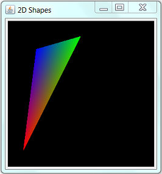
import java.awt.BorderLayout;
import java.awt.event.WindowAdapter;
import java.awt.event.WindowEvent;
import javax.media.opengl.GL;
import javax.media.opengl.GLAutoDrawable;
import javax.media.opengl.GLCanvas;
import javax.media.opengl.GLEventListener;
import javax.media.opengl.glu.GLU;
import javax.swing.JFrame;
import javax.swing.JPanel;
import com.sun.opengl.util.FPSAnimator;
public class JOGLEx1Shape2D extends JPanel implements GLEventListener {
private static final int REFRESH_FPS = 60; // Display refresh frames per second
private GLU glu; // For the GL Utility
final FPSAnimator animator; // Used to drive display()
private float theta = 0;
private float sinTheta, cosTheta;
// Constructor
public JOGLEx1Shape2D() {
GLCanvas canvas = new GLCanvas();
this.setLayout(new BorderLayout());
this.add(canvas, BorderLayout.CENTER);
canvas.addGLEventListener(this);
// Run the animation loop using the fixed-rate Frame-per-second animator,
// which calls back display() at this fixed-rate (FPS).
animator = new FPSAnimator(canvas, REFRESH_FPS, true);
}
// Main program
public static void main(String[] args) {
final int WINDOW_WIDTH = 480; // Width of the drawable
final int WINDOW_HEIGHT = 480; // Height of the drawable
final String WINDOW_TITLE = "2D Shapes";
JFrame frame = new JFrame();
final JOGLEx1Shape2D joglMain = new JOGLEx1Shape2D();
frame.setContentPane(joglMain);
frame.addWindowListener(new WindowAdapter() {
@Override
public void windowClosing(WindowEvent e) {
// Use a dedicate thread to run the stop() to ensure that the
// animator stops before program exits.
new Thread() {
@Override
public void run() {
joglMain.animator.stop(); // stop the animator loop
System.exit(0);
}
}.start();
}
});
frame.setSize(WINDOW_WIDTH, WINDOW_HEIGHT);
frame.setTitle(WINDOW_TITLE);
frame.setVisible(true);
joglMain.animator.start(); // start the animation loop
}
// Implement methods defined in GLEventListener
@Override
public void init(GLAutoDrawable drawable) { }
@Override
public void display(GLAutoDrawable drawable) {
render(drawable); // Draw a color triangle
}
@Override
public void reshape(GLAutoDrawable drawable, int x, int y, int width, int height) { }
@Override
public void displayChanged(GLAutoDrawable drawable, boolean modeChanged, boolean deviceChanged) { }
private void render(GLAutoDrawable drawable) {
GL gl = drawable.getGL();
gl.glClear(GL.GL_COLOR_BUFFER_BIT); // Clear background
// Draw a triangle
sinTheta = (float)Math.sin(theta);
cosTheta = (float)Math.cos(theta);
gl.glBegin(GL.GL_TRIANGLES);
gl.glColor3f(1.0f, 0.0f, 0.0f); // Red
gl.glVertex2d(-cosTheta, -cosTheta);
gl.glColor3f(0.0f, 1.0f, 0.0f); // Green
gl.glVertex2d(0.0f, cosTheta);
gl.glColor3f(0.0f, 0.0f, 1.0f); // Blue
gl.glVertex2d(sinTheta, -sinTheta);
gl.glEnd();
}
}
To rotate the triangle, include a new method called update() that changes the vertices of the triangle after each refresh.
@Override
public void display(GLAutoDrawable drawable) {
render(drawable); // Draw a color triangle
update(); // Modify the triangle's vertices
}
private void update() {
theta += 0.01f;
}
More on OpenGL Event Handlers
init(): called back immediately after the OpenGL context is initialized. It can be used to perform one-time initialization tasks such as setting up of lights and display lists. init() runs only once.
A typical init() for rendering 3D shapes, with depth test enabled, is as follows:
@Override
public void init(GLAutoDrawable drawable) {
// Get the OpenGL graphics context
GL gl = drawable.getGL();
// GL Utilities
glu = new GLU();
// Enable smooth shading, which blends colors nicely, and smoothes out lighting.
gl.glShadeModel(GL.GL_SMOOTH);
// Set background color in RGBA. Alpha: 0 (transparent) 1 (opaque)
gl.glClearColor(0.0f, 0.0f, 0.0f, 0.0f);
// Setup the depth buffer and enable the depth testing
gl.glClearDepth(1.0f); // clear z-buffer to the farthest
gl.glEnable(GL.GL_DEPTH_TEST); // enables depth testing
gl.glDepthFunc(GL.GL_LEQUAL); // the type of depth test to do
// Do the best perspective correction
gl.glHint(GL.GL_PERSPECTIVE_CORRECTION_HINT, GL.GL_NICEST);
// ----- Your OpenGL initialization code here -----
// ......
}
reshape(): called back when the drawable is first set to visible, and during the first repaint after the canvas has been resized.
A typical reshape() that sets the view port (to cover the entire screen), and the project mode is as follows:
@Override
public void reshape(GLAutoDrawable drawable, int x, int y, int width, int height) {
// Get the OpenGL graphics context
GL gl = drawable.getGL();
height = (height == 0) ? 1 : height; // prevent divide by zero
float aspect = (float)width / height;
// Reset the current view port
gl.glViewport(0, 0, width, height);
// Set up the projection matrix - choose perspective view
gl.glMatrixMode(GL.GL_PROJECTION);
gl.glLoadIdentity(); // reset
// Angle of view (fovy) is 45 degrees (in the up y-direction). Based on this
// canvas's aspect ratio. Clipping z-near is 0.1f and z-near is 100.0f.
glu.gluPerspective(45.0f, aspect, 0.1f, 100.0f); // fovy, aspect, zNear, zFar
// Enable the model-view transform
gl.glMatrixMode(GL.GL_MODELVIEW);
gl.glLoadIdentity(); // reset
}
display(): called back to perform rendering by an animator.
@Override
public void display(GLAutoDrawable drawable) {
// Get the OpenGL graphics context
GL gl = drawable.getGL();
// Clear the color and the depth buffers
gl.glClear(GL.GL_COLOR_BUFFER_BIT | GL.GL_DEPTH_BUFFER_BIT);
// Reset the view (x, y, z axes back to normal)
gl.glLoadIdentity();
// ----- Your OpenGL rendering code here -----
}
displayChanged(): called back when the display mode (e.g., screen resolution) has been changed. Not implemented in JOGL.
@Override
public void displayChanged(GLAutoDrawable drawable, boolean modeChanged, boolean deviceChanged) { }
Example 2: Rotating 3D Shapes
The following example show a color-pyramid and color-cube (Nehe Lesson 5).
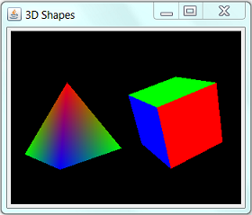
import java.awt.BorderLayout;
import java.awt.event.WindowAdapter;
import java.awt.event.WindowEvent;
import javax.media.opengl.GL;
import javax.media.opengl.GLAutoDrawable;
import javax.media.opengl.GLCanvas;
import javax.media.opengl.GLEventListener;
import javax.media.opengl.glu.GLU;
import javax.swing.JFrame;
import javax.swing.JPanel;
import com.sun.opengl.util.FPSAnimator;
public class JOGLEx2Shape3D extends JPanel implements GLEventListener {
private static final int REFRESH_FPS = 60; // Display refresh frames per second
final FPSAnimator animator; // Used to drive display()
private GLU glu; // For the GL Utility
static float anglePyramid = 0; // rotational angle in degree for pyramid
static float angleCube = 0; // rotational angle in degree for cube
static float speedPyramid = 2.0f; // rotational speed for pyramid
static float speedCube = -1.5f; // rotational speed for cube
// Constructor
public JOGLEx2Shape3D() {
GLCanvas canvas = new GLCanvas();
this.setLayout(new BorderLayout());
this.add(canvas, BorderLayout.CENTER);
canvas.addGLEventListener(this);
// Run the animation loop using the fixed-rate Frame-per-second animator,
// which calls back display() at this fixed-rate (FPS).
animator = new FPSAnimator(canvas, REFRESH_FPS, true);
}
// Main program
public static void main(String[] args) {
final int WINDOW_WIDTH = 320; // Width of the drawable
final int WINDOW_HEIGHT = 240; // Height of the drawable
final String WINDOW_TITLE = "3D Shapes";
JFrame frame = new JFrame();
final JOGLEx2Shape3D joglMain = new JOGLEx2Shape3D();
frame.setContentPane(joglMain);
frame.addWindowListener(new WindowAdapter() {
@Override
public void windowClosing(WindowEvent e) {
// Use a dedicate thread to run the stop() to ensure that the
// animator stops before program exits.
new Thread() {
@Override
public void run() {
joglMain.animator.stop(); // stop the animator loop
System.exit(0);
}
}.start();
}
});
frame.setSize(WINDOW_WIDTH, WINDOW_HEIGHT);
frame.setTitle(WINDOW_TITLE);
frame.setVisible(true);
joglMain.animator.start(); // start the animation loop
}
// Implement methods defined in GLEventListener
@Override
public void init(GLAutoDrawable drawable) {
// Get the OpenGL graphics context
GL gl = drawable.getGL();
// GL Utilities
glu = new GLU();
// Enable smooth shading, which blends colors nicely, and smoothes out lighting.
gl.glShadeModel(GL.GL_SMOOTH);
// Set background color in RGBA. Alpha: 0 (transparent) 1 (opaque)
gl.glClearColor(0.0f, 0.0f, 0.0f, 0.0f);
// Setup the depth buffer and enable the depth testing
gl.glClearDepth(1.0f); // clear z-buffer to the farthest
gl.glEnable(GL.GL_DEPTH_TEST); // enables depth testing
gl.glDepthFunc(GL.GL_LEQUAL); // the type of depth test to do
// Do the best perspective correction
gl.glHint(GL.GL_PERSPECTIVE_CORRECTION_HINT, GL.GL_NICEST);
}
@Override
public void display(GLAutoDrawable drawable) {
// Get the OpenGL graphics context
GL gl = drawable.getGL();
// Clear the color and the depth buffers
gl.glClear(GL.GL_COLOR_BUFFER_BIT | GL.GL_DEPTH_BUFFER_BIT);
// ----- Render the Pyramid -----
gl.glLoadIdentity(); // reset the model-view matrix
gl.glTranslatef(-1.6f, 0.0f, -6.0f); // translate left and into the screen
gl.glRotatef(anglePyramid, -0.2f, 1.0f, 0.0f); // rotate about the y-axis
gl.glBegin(GL.GL_TRIANGLES); // of the pyramid
// Font-face triangle
gl.glColor3f(1.0f, 0.0f, 0.0f); // Red
gl.glVertex3f(0.0f, 1.0f, 0.0f);
gl.glColor3f(0.0f, 1.0f, 0.0f); // Green
gl.glVertex3f(-1.0f, -1.0f, 1.0f);
gl.glColor3f(0.0f, 0.0f, 1.0f); // Blue
gl.glVertex3f(1.0f, -1.0f, 1.0f);
// Right-face triangle
gl.glColor3f(1.0f, 0.0f, 0.0f); // Red
gl.glVertex3f(0.0f, 1.0f, 0.0f);
gl.glColor3f(0.0f, 0.0f, 1.0f); // Blue
gl.glVertex3f(1.0f, -1.0f, 1.0f);
gl.glColor3f(0.0f, 1.0f, 0.0f); // Green
gl.glVertex3f(1.0f, -1.0f, -1.0f);
// Back-face triangle
gl.glColor3f(1.0f, 0.0f, 0.0f); // Red
gl.glVertex3f(0.0f, 1.0f, 0.0f);
gl.glColor3f(0.0f, 1.0f, 0.0f); // Green
gl.glVertex3f(1.0f, -1.0f, -1.0f);
gl.glColor3f(0.0f, 0.0f, 1.0f); // Blue
gl.glVertex3f(-1.0f, -1.0f, -1.0f);
// Left-face triangle
gl.glColor3f(1.0f, 0.0f, 0.0f); // Red
gl.glVertex3f(0.0f, 1.0f, 0.0f);
gl.glColor3f(0.0f, 0.0f, 1.0f); // Blue
gl.glVertex3f(-1.0f, -1.0f, -1.0f);
gl.glColor3f(0.0f, 1.0f, 0.0f); // Green
gl.glVertex3f(-1.0f, -1.0f, 1.0f);
gl.glEnd(); // of the pyramid
// ----- Render the Color Cube -----
gl.glLoadIdentity(); // reset the current model-view matrix
gl.glTranslatef(1.6f, 0.0f, -7.0f); // translate right and into the screen
gl.glRotatef(angleCube, 1.0f, 1.0f, 1.0f); // rotate about the x, y and z-axes
gl.glBegin(GL.GL_QUADS); // of the color cube
// Top-face
gl.glColor3f(0.0f, 1.0f, 0.0f); // green
gl.glVertex3f(1.0f, 1.0f, -1.0f);
gl.glVertex3f(-1.0f, 1.0f, -1.0f);
gl.glVertex3f(-1.0f, 1.0f, 1.0f);
gl.glVertex3f(1.0f, 1.0f, 1.0f);
// Bottom-face
gl.glColor3f(1.0f, 0.5f, 0.0f); // orange
gl.glVertex3f(1.0f, -1.0f, 1.0f);
gl.glVertex3f(-1.0f, -1.0f, 1.0f);
gl.glVertex3f(-1.0f, -1.0f, -1.0f);
gl.glVertex3f(1.0f, -1.0f, -1.0f);
// Front-face
gl.glColor3f(1.0f, 0.0f, 0.0f); // red
gl.glVertex3f(1.0f, 1.0f, 1.0f);
gl.glVertex3f(-1.0f, 1.0f, 1.0f);
gl.glVertex3f(-1.0f, -1.0f, 1.0f);
gl.glVertex3f(1.0f, -1.0f, 1.0f);
// Back-face
gl.glColor3f(1.0f, 1.0f, 0.0f); // yellow
gl.glVertex3f(1.0f, -1.0f, -1.0f);
gl.glVertex3f(-1.0f, -1.0f, -1.0f);
gl.glVertex3f(-1.0f, 1.0f, -1.0f);
gl.glVertex3f(1.0f, 1.0f, -1.0f);
// Left-face
gl.glColor3f(0.0f, 0.0f, 1.0f); // blue
gl.glVertex3f(-1.0f, 1.0f, 1.0f);
gl.glVertex3f(-1.0f, 1.0f, -1.0f);
gl.glVertex3f(-1.0f, -1.0f, -1.0f);
gl.glVertex3f(-1.0f, -1.0f, 1.0f);
// Right-face
gl.glColor3f(1.0f, 0.0f, 1.0f); // magenta
gl.glVertex3f(1.0f, 1.0f, -1.0f);
gl.glVertex3f(1.0f, 1.0f, 1.0f);
gl.glVertex3f(1.0f, -1.0f, 1.0f);
gl.glVertex3f(1.0f, -1.0f, -1.0f);
gl.glEnd(); // of the color cube
// Update the rotational angle after each refresh.
anglePyramid += speedPyramid;
angleCube += speedCube;
}
@Override
public void reshape(GLAutoDrawable drawable, int x, int y, int width, int height) {
// Get the OpenGL graphics context
GL gl = drawable.getGL();
height = (height == 0) ? 1 : height; // prevent divide by zero
float aspect = (float)width / height;
// Set the current view port to cover full screen
gl.glViewport(0, 0, width, height);
// Set up the projection matrix - choose perspective view
gl.glMatrixMode(GL.GL_PROJECTION);
gl.glLoadIdentity(); // reset
// Angle of view (fovy) is 45 degrees (in the up y-direction). Based on this
// canvas's aspect ratio. Clipping z-near is 0.1f and z-near is 100.0f.
glu.gluPerspective(45.0f, aspect, 0.1f, 100.0f); // fovy, aspect, zNear, zFar
// Enable the model-view transform
gl.glMatrixMode(GL.GL_MODELVIEW);
gl.glLoadIdentity(); // reset
}
@Override
public void displayChanged(GLAutoDrawable drawable, boolean modeChanged, boolean deviceChanged) {
// Not implemented in JOGL.
}
}
Try converting the program to run as an applet.
Example 2 Continue: Full-Screen Mode
Let's convert the previous example to run in full-screen mode, by writing a main class that extends JFrame. It processes the key input (ESC to quit, F1 to toggle between full-screen mode and windowed mode). No change needed for JOGLEx2Shape3D class, whose main() method is simply ignored.
import java.awt.Dimension;
import java.awt.GraphicsDevice;
import java.awt.GraphicsEnvironment;
import java.awt.event.KeyEvent;
import java.awt.event.KeyListener;
import java.awt.event.WindowAdapter;
import java.awt.event.WindowEvent;
import javax.swing.JFrame;
public class JOGLEx2Shape3DFullScreenMain extends JFrame implements KeyListener {
private static final String WINDOW_TITLE = "3D Shapes in Full Screen Mode";
private static int windowWidth = 640; // size in non-full-screen mode
private static int windowHeight = 480;
private JOGLEx2Shape3D joglMain;
private GraphicsDevice device;
private boolean fullScreen = true; // full-screen or windowed mode
// Constructor
public JOGLEx2Shape3DFullScreenMain() {
joglMain = new JOGLEx2Shape3D();
this.getContentPane().add(joglMain);
// Get the default graphic device and try full screen mode
device = GraphicsEnvironment.getLocalGraphicsEnvironment()
.getDefaultScreenDevice();
if (device.isFullScreenSupported()) { // Go for full-screen mode
this.setUndecorated(true); // Don't show title and border
this.setResizable(false);
//this.setIgnoreRepaint(true); // Ignore OS re-paint request
device.setFullScreenWindow(this);
fullScreen = true;
} else { // Windowed mode
this.setSize(windowWidth, windowWidth);
this.setResizable(true);
fullScreen = false;
}
this.addWindowListener(new WindowAdapter() {
@Override
public void windowClosing(WindowEvent e) {
// Use a dedicate thread to run the stop() to ensure that the
// animator stops before program exits.
new Thread() {
@Override
public void run() {
joglMain.animator.stop(); // stop the animator loop
System.exit(0);
}
}.start();
}
});
// Enable keyboard input
this.addKeyListener(this);
this.setFocusable(true); // To receive key event
this.requestFocus();
this.setTitle(WINDOW_TITLE);
this.setVisible(true);
joglMain.animator.start(); // start the animation loop
}
public static void main(String[] args) {
new JOGLEx2Shape3DFullScreenMain();
}
// ------ Implement methods declared in KeyListener ------
@Override
public void keyPressed(KeyEvent e) {
int keyCode = e.getKeyCode();
switch (keyCode) {
// F1 to toggle between full-screen and windowed modes
case KeyEvent.VK_F1:
if (!fullScreen) { // Saved the current size for restoration
Dimension screenSize = this.getSize();
windowWidth = (int)screenSize.getWidth();
windowHeight = (int)screenSize.getHeight();
}
fullScreen = !fullScreen;
this.setVisible(false); // Hide the display
if (this.isDisplayable())
this.dispose(); // For changing the decoration
if (fullScreen) {
if (device.isFullScreenSupported()) {
this.setUndecorated(true);
this.setResizable(false);
device.setFullScreenWindow(this);
}
} else {
this.setUndecorated(false); // Put the title and border back
device.setFullScreenWindow(null); // Windowed mode
this.setSize(windowWidth, windowHeight);
this.setResizable(true);
}
this.setVisible(true); // Show it
break;
// ESC to quit
case KeyEvent.VK_ESCAPE:
// Use a dedicate thread to run the stop() to ensure that the
// animator stops before program exits.
new Thread() {
@Override
public void run() {
joglMain.animator.stop(); // stop the animator loop
System.exit(0);
}
}.start();
break;
}
}
@Override
public void keyReleased(KeyEvent e) {}
@Override
public void keyTyped(KeyEvent e) {}
}
Nehe's JOGL 1.1 Port
I have ported some of the Nehe's lessons into JOGL. Refer to Nehe for the problem descriptions. Take note that these codes run on JOGL 1.1, and NOT JOGL 2.0.
Download all source codes: "JOGL1Nehe.zip".
Setting Up
- Nehe's Lesson #1: Setting up OpenGL's window
- Using
GLCanvas:NeheJOGL01SetupGLCanvas.java(Read this and continue to the other lessons. Try the other set-ups later.) - Using
GLJPanel:NeheJOGL01SetupGLJPanel.java. - Run as applet:
NeheJOGL01Applet.java. - Run in full-screen mode:
NeheJOGL01FullScreenMain.java.
- Using
OpenGL Basics
I consider Lessons 2-8 as OpenGL basic lessons, that are extremely important!
- Nehe's Lesson #2: Your first polygon -
NeheJOGL02Basics.java. - Nehe's Lesson #3: Adding Color -
Nehe03JOGLColor.java. 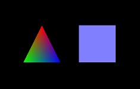 - Nehe's Lesson #4: Rotation -
NeheJOGL04Rotation.java. 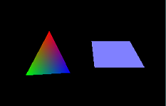 - Nehe's Lesson #5: 3D Shape -
NeheJOGL05Shape3D.java.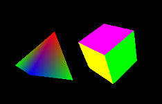 - Nehe's Lesson #6: Texture -
NeheJOGL06Texture.java.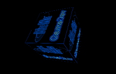 - Nehe's Lesson #7: Texture Filter, Lighting, and key-controlled -
NeheJOGL07TextureFilterLightKey.java. Main program for running in full-screen mode:NeheJOGL07FullScreenMain.java.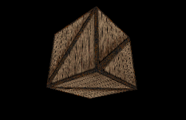 - Nehe's Lesson #8: Blending -
NeheJOGL08Blending.java.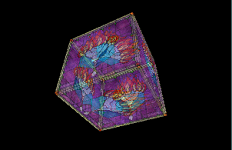
OpenGL Intermediates
- Nehe's Lesson #9: Moving Bitmaps in 3D space -
NeheJOGL09Stars.java.
- Nehe's Lesson #10: Building and moving in a 3D world -
NeheJOGL10World3D.java.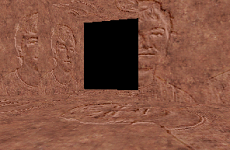 - Nehe's Lesson #11: Waving Effect -
NeheJOGL11Flag.java. - Nehe's Lesson #12: Using Display List -
NeheJOGL12DisplayList.java.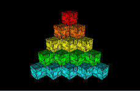 - Nehe's Lesson #13: Bitmap Fonts (2D Texts) -
NeheJOGL13Text2D.java.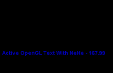 - Nehe's Lesson #14: Outline Fonts (3D Texts) -
NeheJOGL14Text3D.java.
- Nehe's Lesson #16: Cool Looking Fog -
NeheJOGL16Fog.java.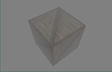 - Nehe's Lesson #18: Quadrics -
NeheJOGL18Quadrics.java.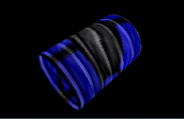 - Nehe's Lesson #19: Particle Engine Using Triangle Strips
NeheJOGL19Particle.javaand FireworksNeheJOGL19Firework.java
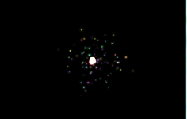 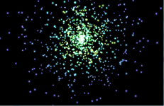 - Nehe's Lesson #26: Clipping & Reflections Using The Stencil Buffer -
NeheJOGL26Reflection.java.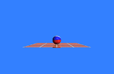
Deploying JOGL Applets
JDK 1.6 update 10 has greatly improved the efficiency of Java applet, and it is now feasible and practical to deploy a huge Java program as an applet.
Deploying JOGL applet is a little tricky, as it involves many jar files (jogl.jar, gluegen.jar) as well as their associate native libraries. The JNLPAppletLauncher (@ https://applet-launcher.dev.java.net) greatly simplifies the deployment process for JOGL (as well as Java3D, JOAL etc.).
A JOGL applet most likely involves a few classes (and inner classes). You should jar up all the class into a single JAR file for efficient deployment (as the files are compressed). For example, suppose that your applet includes Hello.class, Hello$1.class, Hello$1$1.class and HelloApplet.class, where HelloApplet.class contains the main program. Invoke the JDK's JAR utility (from cmd shell) as follows:
> jar cvf Hello.jar Hello.class, Hello$1.class, Hello$1$1.class HelloApplet.class
The command-line options needed are: 'c' (create new JAR file), 'v' (verbose and print the output), 'f' (JAR filename followed, i.e., Hello.jar). Include all the relevant classes.
JOGL 1.x
To deploy a JOGL 1.x applet, use the following HTML <applet> tag:
<applet code="org.jdesktop.applet.util.JNLPAppletLauncher"
width=640
height=480
archive="http://download.java.net/media/applet-launcher/applet-launcher.jar,
http://download.java.net/media/jogl/builds/archive/jsr-231-1.x-webstart-current/gluegen-rt-natives-windows-i586.jar,
http://download.java.net/media/jogl/builds/archive/jsr-231-1.x-webstart-current/jogl-natives-windows-i586.jar,
http://download.java.net/media/jogl/builds/archive/jsr-231-1.x-webstart-current/jogl.jar,
http://download.java.net/media/jogl/builds/archive/jsr-231-1.x-webstart-current/gluegen-rt.jar,
Hello.jar">
<param name="codebase_lookup" value="false">
<param name="subapplet.classname" value="HelloApplet">
<param name="subapplet.displayname" value="Test JOGL Applet">
<param name="noddraw.check" value="true">
<param name="progressbar" value="true">
<param name="jnlpNumExtensions" value="1">
<param name="jnlpExtension1"
value="http://download.java.net/media/jogl/builds/archive/jsr-231-1.x-webstart-current/jogl.jnlp">
</applet>
where:
- Attribute "
code" is pointing at "JNLPAppletLauncher", which is downloaded from http://download.java.net/media/applet-launcher/applet-launcher.jar, instead of your local server. - Attribute "
archive" includes all the jar files (all relevant native codes) for running JOGL program. Again, these are downloaded from java.net instead of providing your own copy. "archive" also include your JAR file (Hello.jar). - Attributes "
width" and "height" specify the width and height of your applet's display area inside the browser's window. - The name of your main applet is specified in the parameter "
subapplet.classname". - The parameter "
codebase_lookup" is set to false, as this applet does not need to fetch other files from your local server's code base path. - The parameter "
noddraw.check" is set to true, to check if DirectDraw is enabled and, if so, will prompt the user to disable it for all applets. DirectDraw is incompatible with OpenGL. Disabling it is unlikely to slow down other non-3D applets significantly.
In the above example, I included only the "i586" native files. You probably need to include native files for the other platforms as well. Check http://download.java.net/media/jogl/builds/archive/jsr-231-1.x-webstart-current.
To deploy an applet with a single class, you can replace your JAR file with "." (current working directory), and give the applet's class name in the parameter "subapplet.classname". (You need not JAR up one single class!)
JOGL 2.x
You need to fetch a different set of JOGL binaries and native codes, as follows:
<applet code="org.jdesktop.applet.util.JNLPAppletLauncher"
width=640
height=400
archive="http://download.java.net/media/applet-launcher/applet-launcher.jar,
http://download.java.net/media/jogl/jsr-231-2.x-webstart/nativewindow.all.jar,
http://download.java.net/media/jogl/jsr-231-2.x-webstart/jogl.all.jar,
http://download.java.net/media/gluegen/webstart-2.x/gluegen-rt.jar,
Hello.jar">
<param name="codebase_lookup" value="false">
<param name="subapplet.classname" value="HelloApplet">
<param name="subapplet.displayname" value="Test JOGL Applet">
<param name="noddraw.check" value="true">
<param name="progressbar" value="true">
<param name="jnlpNumExtensions" value="1">
<param name="jnlpExtension1"
value="http://download.java.net/media/jogl/jsr-231-2.x-webstart/jogl-core.jnlp">
</applet>
Read the above section for the explanation.
I believe that "nativewindow.all.jar" provides the native codes for all the major platforms.
REFERENCES & RESOURCES
- JOGL mother site @ https://jogl.dev.java.net.
- OpenGL mother site @ www.opengl.org.
- Nehe OpenGL tutorials @ http://nehe.gamedev.net.
- OpenGL Programming Guide (Red book)
- OpenGL Superbible (Blue book)
Latest version tested: JDK 1.6, JOGL 1.1.1a
Last modified: October, 2010